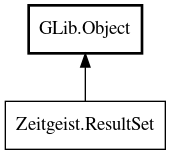

ResultSet
Object Hierarchy:

Description:
public interface ResultSet : Object
Cursor-like interface for results sets
include: zeitgeist.h
Interface for results returned by zeitgeist_log_find_events(), zeitgeist_log_get_events(), and zeitgeist_index_search().
This interface utilizes a cursor-like metaphor. You advance the cursor by calling zeitgeist_result_set_next() or adjust it manually by
calling zeitgeist_result_set_seek().
Calling zeitgeist_result_set_next() will also return the event at the current cursor position. You may retrieve the current event without
advancing the cursor by calling zeitgeist_result_set_peek().
All known implementing classes:
Content:
Methods:
- public abstract uint estimated_matches ()
Get the total number of matches that would have been for the query
that generated the result set had it not been restricted in size. For FTS the number of matches is estimated.
- public abstract bool has_next ()
Check if a call to zeitgeist_result_set_next() will succeed.
- public ResultSet iterator ()
Do not use this method! It is only for use by Vala.
- public abstract Event? next_value ()
Get the current event from the result set and advance the cursor. To
ensure that calls to this method will succeed you can call zeitgeist_result_set_has_next().
- public abstract void reset ()
Resets the result set to start iterating it again from scratch.
- public abstract uint size ()
Get the number of #ZeitgeistEvent<!-- -->s held in a
#ZeitgeistResultSet. Unlike the number obtained from zeitgeist_result_set_estimated_matches() the size of the result set is always
equal to the number of times you can call zeitgeist_result_set_next().
- public abstract uint tell ()
Get the current position of the cursor.
Inherited Members:
All known members inherited from class GLib.Object
- @get
- @new
- @ref
- @set
- add_toggle_ref
- add_weak_pointer
- bind_property
- connect
- constructed
- disconnect
- dispose
- dup_data
- dup_qdata
- force_floating
- freeze_notify
- get_class
- get_data
- get_property
- get_qdata
- get_type
- getv
- interface_find_property
- interface_install_property
- interface_list_properties
- is_floating
- new_valist
- new_with_properties
- newv
- notify
- notify_property
- ref_count
- ref_sink
- remove_toggle_ref
- remove_weak_pointer
- replace_data
- replace_qdata
- set_data
- set_data_full
- set_property
- set_qdata
- set_qdata_full
- set_valist
- setv
- steal_data
- steal_qdata
- thaw_notify
- unref
- watch_closure
- weak_ref
- weak_unref